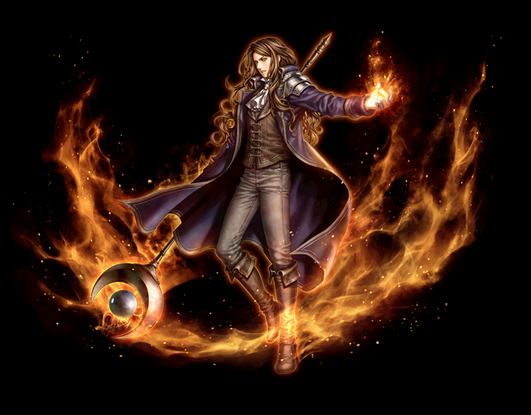
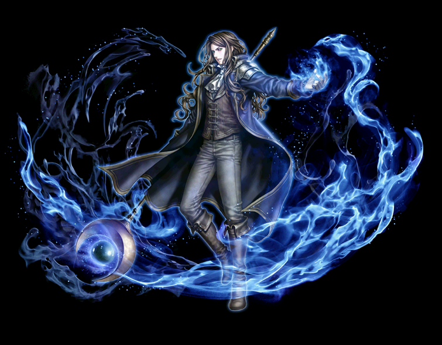

2022.07～ ウィザード 覚醒スキル一覧
[通常スキル]
爆炎の大魔導師
氷嵐の大魔導師
猛撃の大魔導師
爆炎の大魔導師
| 爆炎の大魔導師 | |||||||
|---|---|---|---|---|---|---|---|
|  | |||||||
| [専用パッシブ] 業火の禁書 | |||||||
| スキル説明 | 火炎魔法の神髄が記された禁書を得ることにより、火炎魔法の消耗CPが減少、およびに火炎魔法の威力が増加する。 |
||||||
| スキル効果 |
全ての火属性魔法スキルの消費CPが20％減少。威力が10%上昇 |
||||||
氷嵐の大魔導師
| 氷嵐の大魔導師 | |||||||
|---|---|---|---|---|---|---|---|
|  | |||||||
| [専用パッシブ] 氷の心 | |||||||
| スキル説明 |
血が凍りつくほど体温を下げ、水の精霊と直接共感する。 クーラントキャノン使用中、一定の確率で呼び出しに答えた水の精霊が支援魔法で攻撃する。 |
||||||
| スキル効果 |
ウォーターキャノン使用時、20%の確率で敵に6連続の追加ダメージ発生 |
||||||
猛撃の大魔導師
| 猛撃の大魔導師 | |||||||
|---|---|---|---|---|---|---|---|
 |
|||||||
| [専用パッシブ] 魔導戦闘 | |||||||
| スキル説明 |
近接格闘を行うウィザードたちの戦闘方法。 感電爆破によって敵が倒れた時に、引き寄せの風を起こし戦闘をサポートしてくれる。 |
||||||
| スキル効果 |
感電・爆発効果で敵を討伐した時、モンスターに感電効果と半径2.5mの敵を引き寄せる。 |
||||||